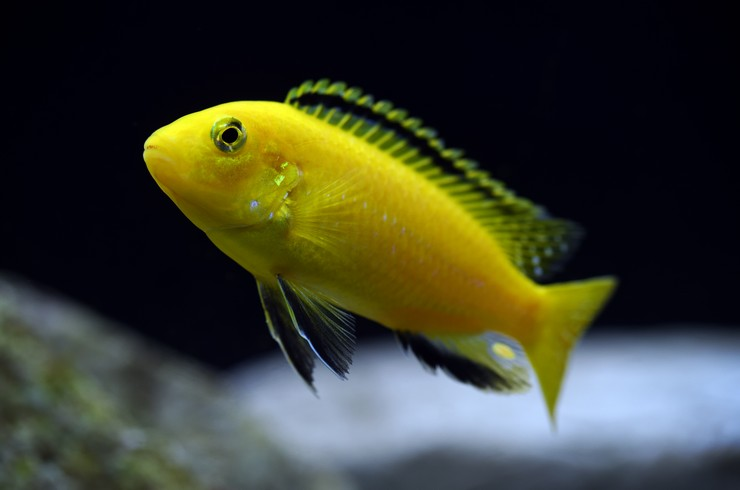

Sarı prenses balığı (Labidochromis caeruleus), akvaryum hobisinin en popüler ve en göz alıcı türlerinden biridir. Malawi Gölü kökenli olan bu çiklit türü, parlak sarı rengiyle akvaryumlara canlılık ve estetik bir görünüm kazandırır. Ortalama 10–12 cm uzunluğa kadar büyüyebilen sarı prensesler, dayanıklı yapıları sayesinde farklı su koşullarına uyum sağlayabilir. Bölgeci ve zaman zaman agresif davranışlar sergileyebilen bu balıklar, özellikle kendi türleriyle veya benzer çiklitlerle birlikte beslendiğinde dikkatli bir akvaryum düzeni gerektirir. 24–28°C sıcaklık aralığında, pH 7.5–8.5 değerlerinde ve iyi filtrelenmiş sularda sağlıklı şekilde gelişirler. Omnivor beslenme yapısına sahip olan sarı prensesler, bitkisel yemler, canlı yemler ve kaliteli kuru yemlerle beslenebilir. Üreme döneminde yumurtalarını ağızda kuluçkaya yatırarak yavrularını koruyan nadir türlerden biridir. Canlı renkleri, dayanıklılığı ve ilginç davranışlarıyla sarı prenses balığı, hem yeni başlayanlar hem de deneyimli akvaryum severler için akvaryum hobisinin vazgeçilmez türlerinden biridir.